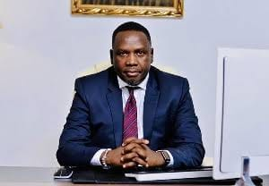
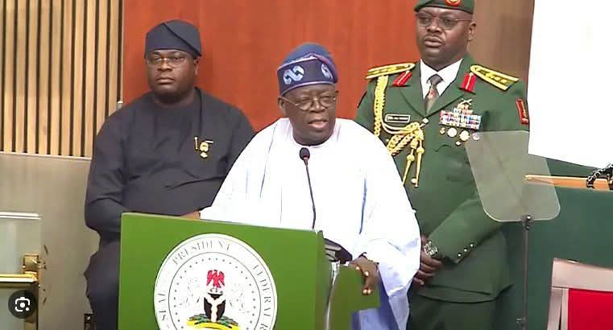
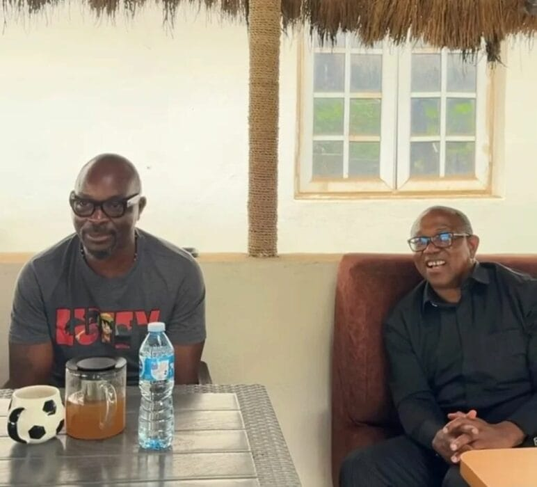
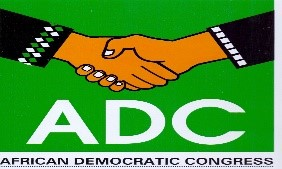
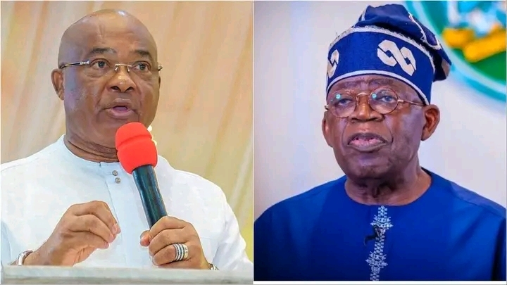
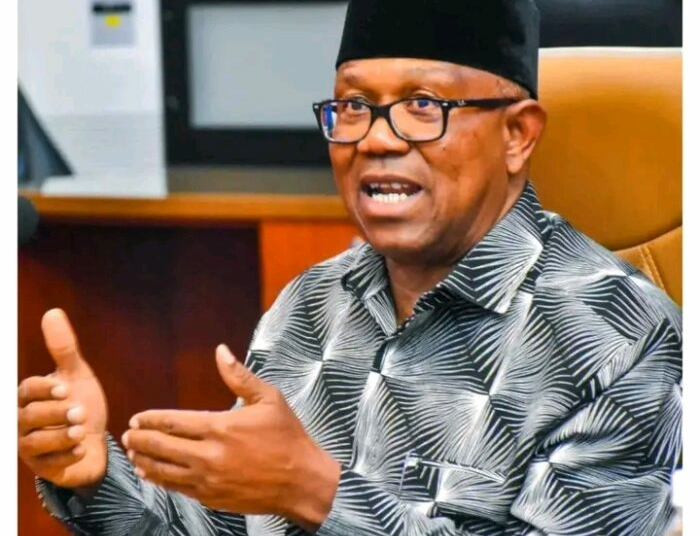
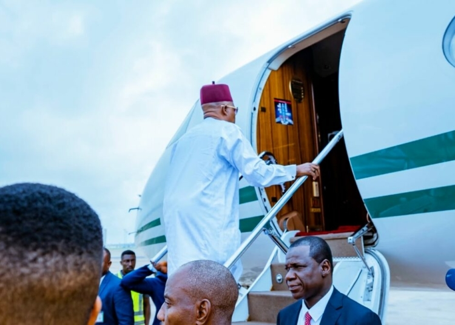

July 8, 2026
Force Feud Crippled Counterterrorism Under Buhari – Presidency
The Presidency has alleged that a rivalry between the Nigerian Army and the Nigerian Air Force during former President Muhammadu Buhari’s administration undermined counterterrorism operations, with troops allegedly denied crucial air support during some military missions.
Special adviser policy communications to the President , Daniel Bwala made the claim while speaking on The Link Up Podcast, a panel discussion hosted by EchoRoom and published on Friday.
According to Bwala, disagreements between the then Chief of Air Staff and the leadership of the Nigerian Army disrupted operational coordination, resulting in situations where requests for air cover were not honoured during military operations.
“I remember during Buhari there was this disagreement that was reported to be between the Chief of Air Staff and that of the Army, so that whenever an operation was undertaken, when they asked for air cover, there wouldn’t be support. In this administration, it is not so. There is coordination or cooperation,” Bwala said.
He made the remarks while responding to questions on allegations that terrorist groups may have infiltrated Nigeria’s security agencies.
Bwala dismissed claims that members of the military deliberately shield terrorists during attacks, describing such allegations as speculative in the absence of concrete evidence.
“I don’t think so. You see that’s a conjecture, except there’s a live case,” he said.

July 10, 2026
Presidency Releases N𝐚𝐭𝐢𝐨𝐧𝐚𝐥 𝐇𝐨𝐧𝐨𝐮𝐫s List For 2026
Presidency has released the official list of awardees for the 2026 National Honorary Awards, to recognize Nigerians,
both living and dead, who have made significant contributions to the nation’s democratic journey.
The honours, which include the second-highest national honour – Grand Commander of the Order of the Niger (GCON),
SCommander of the Order of the Niger (CON), Officer of the Order of the Niger (OON), and Member of the Federal
Republic (MFR), were announced by President Bola Tinubu during the 2026 Democracy Day Address to a joint session
of the National Assembly in Abuja. The awards cut across various sectors, including civil society, journalism,
politics, and activism, with a strong nod to pro-democracy advocates, media voices during the struggle for the
actualization of June 12, 1993 election, and national development champions.
However, President Tinubu will used the occasion to decorate Senate President Godswill Akpabio, and Speaker of the
House of Representatives Tajudeen Abbas with their GCON awards, with certificates. The date has been fixed in December
and will be communicated to nominees after verification, final category allocation and approval by the Federal
Executive Council (FEC).
The list;
𝗚𝗿𝗮𝗻𝗱 𝗖𝗼𝗺𝗺𝗮𝗻𝗱𝗲𝗿 𝗼𝗳 𝘁𝗵𝗲 𝗢𝗿𝗱𝗲𝗿 𝗼𝗳 𝘁𝗵𝗲 𝗡𝗶𝗴𝗲𝗿 (𝗚𝗖𝗢𝗡)
PROF. AKIN HASSAN
PROF. JOY SAWARE
DR. FABULOUS AJEH
PROF. OLAOYE GBADEBO
DR. OBAH BONIFACE
PROF. GODFERY JOE OKWEDIRA
PROF. AKIN HASSAN
DR. VALENTINE NNADI
SEN. IPALIBO GOGO BANIGO
𝘾𝙤𝙢𝙢𝙖𝙣𝙙𝙚𝙧 𝙤𝙛 𝙩𝙝𝙚 𝙊𝙧𝙙𝙚𝙧 𝙤𝙛 𝙩𝙝𝙚 𝙉𝙞𝙜𝙚𝙧 (𝘾𝙊𝙉)
HON. FESTUS JAJAH OMEHA
DR. EMMANUELA AJARA
ODIKA OKORONTA JOSEPH
MURAYO OLOKO
𝗠𝗲𝗺𝗯𝗲𝗿 𝗼𝗳 𝘁𝗵𝗲 𝗢𝗿𝗱𝗲𝗿 𝗼𝗳 𝘁𝗵𝗲 𝗙𝗲𝗱𝗲𝗿𝗮𝗹 𝗥𝗲𝗽𝘂𝗯𝗹𝗶𝗰 (𝗠𝗙𝗥)
ENGR. MAMURA YUSUF
ANDY JOSEPH IKEDI
DR. NATHANIEL AJADIKE
AFAM BEN OKEY
DAUDA MARIAM
DR. ELIZABETH MURAYO
ENGR. JOSEPH OLAYINKA
𝗖𝗼𝗺𝗺𝗮𝗻𝗱𝗲𝗿 𝗼𝗳 𝘁𝗵𝗲 𝗢𝗿𝗱𝗲𝗿 𝗼𝗳 𝘁𝗵𝗲 𝗙𝗲𝗱𝗲𝗿𝗮𝗹 𝗥𝗲𝗽𝘂𝗯𝗹𝗶𝗰 (𝗖𝗙𝗥)
PROF. SYLVESTER MORAYO
JOSEPHINE OMOBOLA
BENITA OSAROWA
OYOKAMO BRAIMO
DR. GRACE BOMA BANK
DR. MARY OLOJA
HOPE ILODI EMMANUEL
HON. FAYIDE OLOKORO JOE
LAWAN MAKURA
𝗢𝗳𝗳𝗶𝗰𝗲𝗿 𝗼𝗳 𝘁𝗵𝗲 𝗢𝗿𝗱𝗲𝗿 𝗼𝗳 𝘁𝗵𝗲 𝗡𝗶𝗴𝗲𝗿 (𝗢𝗢𝗡)
DR. OHABUENYI PAUL
MATTHEW WENKE JNR BARANGO OPUKUMO
PROF. SONY EMEKA ALI
AMB. PROF. GREG STEPHENS
CHIEF OKORO ANTHONY
DR. DAVID KINGS
DR. BEN OSAJIE
HIGH CHIEF DR. DANIEL ELOZINO OMOYIBO
DR. CELINE NJOKU
DR. JOYCE DIALA
DR. ABDULHAMID MUSA
DR. OKWUDIRI DANIELS OHAA
DR. AISHA SHEHU ADAMU
DR. ADEMOLA FIJABI
DR. NKPORBU ABORLO KENNEDY
DR. OLAGORITE ADETULA
REV. MRS. MAE OLOWOJOBA
BENEDICT UKPEPI
HRH. AMB ONYECHE PROMISE
HON IGBINOBA OGHENEAKBOB
DR. IWARA CHARLES BEN
HAJIYA MARYAM LADI
DR. ADAMU ABDULLAHI
AIYELESO OLASEYI OSKA
BOLORUNDURO SAMUEL ADE
DR. JOHNSON EKWE
HRH. ADAMU ABUBAKAR
ALH SHETIMA ABUBAKA SAIDU
ALH HUDU ISMAIL MADUGU
HON. ABINYE BLESSING PEPPLE
PROF. EMMANUEL ANYANWU
MR. MAURICE ODIETE
REV YUSUF ISHAYA JANFALAN
HON. THOMAS BARIERE ARIAR
ELDER CHRIS O. ELUEMUNO JP
CHIEF NYECHERE LARRY ANELE
DR. ABDULLAHI ALABI MUSA
RT. HON. OBIUWEVBI OMINIMINI
HON. MURICE OKOTI
ABUBAKAR YUNUSA
DR. WENDI OLUKORO
LASI MAMMAN OJIKO
EMEKA ANI ONYEUKERE
PROF. OKORO LASISI
NWANI ONYEJERE ERNEST
KOSISOCHUKWU EMMANUEL
DR. MAMAN HASSAN
REV. AUSTINE NWAULUNE
OLU OLAKOYA
BUBA ABUBAKAR
HON. ABDULAHI NURA
GEN. ALI MUKTAR RTD
SHAGARI EJEKE AMURA
HON. KENNETH OLAYINKA ONIFE
ENGR. MAMURA AGADAMA
ANIDIKE OMALE GABRIEL
ONYEMA OFODILE JAMES
DIKWE ANASTECIA MAGARET

July 18, 2026
Isaac Fayose Reverses Position,Hails Obi As ‘Nigeria’s Incoming President’
Commentator and businessman, Isaac Fayose, has made a dramatic reversal in his stance towards the presidential candidate of the Nigeria
Democratic Congress (NDC), Peter Obi, describing him as Nigeria’s “incoming president” during a visit by the former Anambra State
governor to his residence on Saturday.The development comes just days after Fayose publicly criticised Obi for alleged ingratitude and
threatened to withdraw his support over what he described as a lack of appreciation for his contributions to the Obidient Movement during
the 2023 presidential campaign.Sharing a video of the visit on his Instagra m page, Fayose warmly welcomed Obi and expressed confidence
in his presidential ambition.
“It’s not every day the President comes to your house. Our incoming president. So shall it be, in Jesus’ name,” Fayose said.
Addressing those who had criticised him over his earlier comments, Fayose declared his renewed loyalty to Obi.
For you others abusing me, you can see now, I am 100 per cent Obidient. So you better be Obidient. We are together, and we are winning,”
he added.
Responding, Obi downplayed the online attacks directed at Fayose, insisting that many of those criticising him were not genuine members of
the Obidient Movement.Half of the people that abuse you, they don’t follow us. What they do, when they hire people, they carry them, call
them all sorts of names,” Obi said.
The former Labour Party presidential candidate also stressed the importance of constructive criticism, saying leaders must be open to correction.
“My people will tell you one thing: the one thing I take is criticism. You can never be annoyed with anybody for saying I did something wrong.
Anytime you have any reason to criticise, and when we are not doing what is right, please, I want to hear that I am wrong. It is important that
we do that,” he said.
Obi further argued that effective leadership requires humility, continuous learning and a willingness to admit mistakes.
“If he doesn’t, he shouldn’t lead. He should just go, because he thinks he knows everything. And if you know everything, you are an idiot. You
shouldn’t be a leader. A listener, a learner, always,” he said.
The meeting appears to have eased tensions between the two men following Fayose’s recent outburst, in which he accused Obi of failing to
acknowledge his support during the 2023 electioneering campaign Fayose had claimed he made personal sacrifices for the Obidient Movement,
including making his hotel available to supporters, but never received appreciation from Obi, prompting him to question his continued
support before Saturday’s reconciliation.

July 18, 2026
ADC Blames Tinubu’s Policies For Rising Poverty, Demands Policy Shift
African Democratic Congress (ADC) has blamed the economic policies of President Bola Ahmed Tinubu’s administration for the
worsening poverty and hunger in the country, calling on the President to immediately reverse course or resign from office.
The opposition party said recent reports by the World Bank and the World Food Programme (WFP) showed that the government’s economic reforms had failed to improve the welfare of Nigerians, despite official claims of economic recovery.
In a statement issued on Saturday by its National Publicity Secretary, Mallam Bolaji Abdullahi, the ADC said the World Bank’s report indicating that about 139 million Nigerians now live below the national poverty line, alongside the WFP’s estimate that 17 million Nigerians are facing acute hunger, reflected the devastating impact of the administration’s policies.
According to the party, the figures were evidence that the Tinubu administration’s economic policies had failed and could lead to even more severe consequences if the current approach was not changed.
The ADC argued that although the Federal Government continued to celebrate improvements in economic indicators such as increased revenue, economic growth and foreign reserves, such gains had not translated into better living conditions for ordinary Nigerians.
“The recent reports by the World Bank indicating that 139 million Nigerians or about 60 per cent of the population now live below the national poverty line are hardly surprising, as this catastrophic situation is the inevitable consequence of economic policies that have favoured money over people and statistics over survival,” the statement said.
The party maintained that it had repeatedly warned that economic growth and improved government revenues would remain meaningless unless they improved the welfare of citizens.
It accused the administration of persisting with policies that had compounded hardship while presenting them as necessary sacrifices.
“Instead of changing course, the government has stubbornly stuck with its ruinous economic policies and continues to market recklessness as courage and wickedness as necessary pains,” the ADC stated.
The party said the latest poverty and hunger figures represented President Tinubu’s performance after three years in office, insisting that they should prompt serious reflection by the administration.
On account of this catastrophic failure alone, President Tinubu should be contemplating resigning from office rather than seeking re-election,” it added.
The ADC said Nigeria required a government that placed greater emphasis on improving the lives of citizens rather than celebrating economic statistics.
It stated that the true test of any economic policy should be its ability to reduce poverty, create jobs and improve the welfare of the people.
The opposition party also criticised the government’s reliance on palliative programmes, arguing that temporary interventions could not provide a lasting solution to poverty and food insecurity.
According to the ADC, poverty could only be addressed through structural reforms that stimulate production, support agriculture and create sustainable livelihoods.
The party outlined what it described as its alternative economic agenda, promising to reduce energy costs, improve security in farming communities and rehabilitate Nigeria’s 264 abandoned dams to expand irrigation farming.
It also pledged to increase access to quality seeds, fertilisers and agricultural extension services, invest in storage and agro-processing facilities, and establish regional agricultural production belts to improve food distribution and lower food prices.
In addition, the ADC said it would prioritise investments in nutrition, healthcare, education and skills development as part of efforts to tackle the root causes of poverty and hunger.
It maintained that economic success should be measured by improvements in the quality of life of Nigerians rather than government statistics.
“Hunger is the most honest measure of economic performance because it cannot be manipulated. Until fewer Nigerians go to bed hungry, until poverty begins to fall instead of rise, and until every Nigerian family can once again afford three decent meals a day, every claim of economic success will remain unrecognisable to the people whose lives those policies are supposed to improve,” the statement added.

July 19, 2026
Uzodimma Defends Tinubu’s Reforms, Likens Him To Lee Kuan Yew
Imo State Governor and Chairman of the Progressive Governors’ Forum (PGF), Hope Uzodimma, has defended the economic reforms being implemented by President Bola Ahmed Tinubu, likening the President to Singapore’s founding Prime Minister, Lee Kuan Yew, and insisting that the tough policies introduced by the administration are necessary to reposition Nigeria’s economy.
Uzodimma said President Tinubu assumed office at a time Nigeria was grappling with deep-rooted economic challenges and had no option but to embark on bold reforms to address structural distortions that had hindered the country’s development for years.
Speaking during an interview on TVC News, the governor said transformational leadership demands difficult decisions that may not enjoy immediate public support but are essential for long-term national progress.
According to him, Tinubu inherited an economy burdened by an unsustainable fuel subsidy regime, multiple exchange rate distortions, mounting fiscal pressures and declining government revenues, making comprehensive reforms inevitable.
He said the President understood the enormity of the task before him and moved decisively to implement policies aimed at stabilising the economy and laying the foundation for sustainable growth.
“I have seen another Lee Kuan Yew in President Bola Ahmed Tinubu. Like Lee Kuan Yew, he is taking bold decisions that may be painful today, but they are necessary to secure a better future for Nigeria,” Uzodimma said.
The governor maintained that while many Nigerians were experiencing the short-term impact of the reforms, history had shown that countries only achieve lasting prosperity when leaders are willing to take difficult but necessary decisions.
Drawing parallels with Singapore’s transformation under Lee Kuan Yew, he noted that the late Singaporean leader faced criticism during the early years of his reforms but was eventually celebrated for turning the country into one of the world’s most prosperous economies.
Uzodimma argued that the removal of fuel subsidy and the unification of the foreign exchange market were among the bold measures introduced to correct long-standing economic distortions and restore investor confidence.
He expressed confidence that the reforms would, in the long run, strengthen Nigeria’s economy, attract investment, create jobs and improve the living standards of citizens.
The governor urged Nigerians to remain patient and continue supporting the Tinubu administration, expressing optimism that the gains of the ongoing reforms would become increasingly evident with time.
He also assured that governors elected on the platform of the All Progressives Congress (APC) would continue to back the President’s Renewed Hope Agenda, saying the administration remained committed to rebuilding the economy through fiscal discipline, infrastructure development and institutional reforms.

July 19, 2026
Nigerians Will Decide Tinubu’s Fate In 2027, Not Opposition — Obi
The presidential candidate of the Nigeria Democratic Congress (NDC), Mr. Peter Obi has said the outcome of the 2027 presidential election will be determined by Nigerians’ assessment of the performance of President Bola Tinubu’s administration rather than by the popularity of any opposition candidate.
Obi made the remarks during an interview on Arise Television aired on Saturday, insisting that the next presidential election should be seen as a referendum on the performance of the current administration.
According to him, the 2027 election is fundamentally between Nigerians and the Tinubu government, as the electorate will decide whether the administration has delivered on its promises or failed to improve the lives of citizens.
“The election in 2027 is not between me and Tinubu. It is between Nigerians and the government of Tinubu. If Nigerians believe they are better off today than they were before, they should vote for the government. But if they think otherwise, they should choose another direction,” Obi said.
The former Anambra State governor argued that elections in a democracy should be about governance and the welfare of citizens rather than personalities or political rivalries
. He urged Nigerians to objectively assess the government’s performance based on their daily experiences and the state of the nation’s economy.
Obi said voters should evaluate the administration’s handling of key national issues, including insecurity, inflation, unemployment, rising cost of living, education, healthcare and economic growth before casting their ballots in 2027.
He maintained that Nigeria has enormous human and natural resources capable of transforming the country into one of the world’s leading economies if properly managed.
However, he lamented that poor leadership, weak institutions and misplaced priorities have continued to hinder national development.
The NDC presidential candidate reiterated that his desire to lead the country was not driven by personal ambition but by a commitment to building a nation where government policies prioritise the welfare of the people, public resources are prudently managed and institutions function effectively.
Obi said his vision for Nigeria includes restoring public confidence in government, creating an enabling environment for businesses to thrive, investing in education and healthcare, improving national security and implementing policies that would generate employment opportunities, particularly for young people.
He also urged Nigerians not to lose faith in the democratic process despite the country’s current socio-economic challenges.
He encouraged citizens to participate actively in the electoral process and use their votes to hold leaders accountable.
According to him, the future of Nigeria rests with the electorate, who have the constitutional responsibility to determine the country’s direction through informed and responsible voting.

July 19, 2026
Shettima Heads To Freetown For 69th ECOWAS Summit
The Vice President, Senator Kashim Shettima has departed Abuja to represent President Bola Ahmed Tinubu, at the 69th Ordinary Session of the Authority of the Heads of State and Government of the Economic Community of West African States (ECOWAS) in Freetown, Sierra Leone.
According to a statement by his spokesman, Stanley Nkwocha,Senator Shettima will join other political and business leaders across West Africa and beyond at the Summit scheduled to take place at the Julius Maada Bio International Conference Centre, Freetown, today, July 19, 2026.
The summit is expected to focus on key policy decisions, strategic resolutions, and reaffirm the leaders’ collective commitment to peace, democracy, economic growth, and regional integration.
The summit is part of the ECOWAS mid-year statutory meetings that bring together heads of state and government, ministers, senior officials and regional institutions to advance the Community’s shared priorities of security, democratic governance, economic integration, trade, infrastructure and sustainable development.